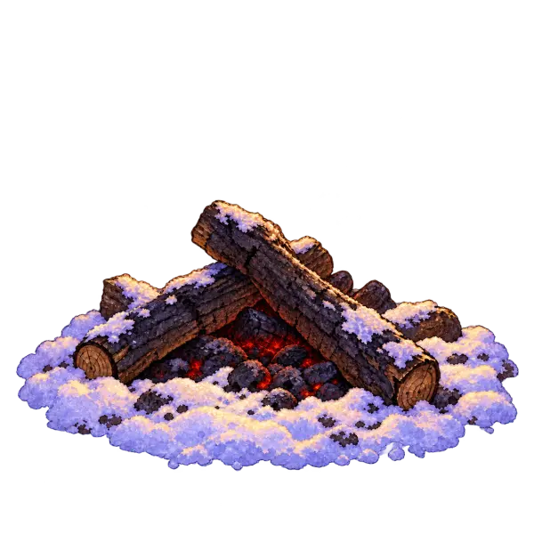
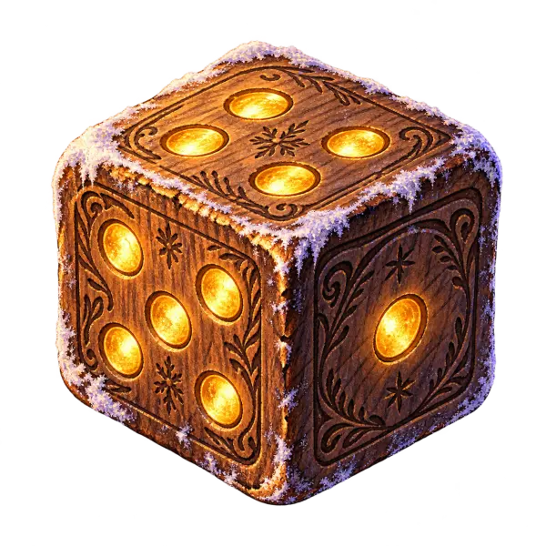
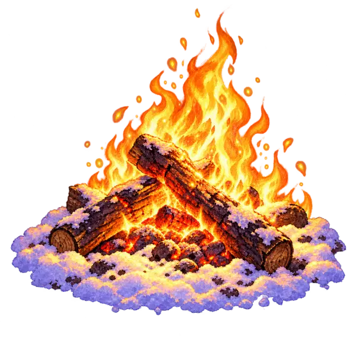
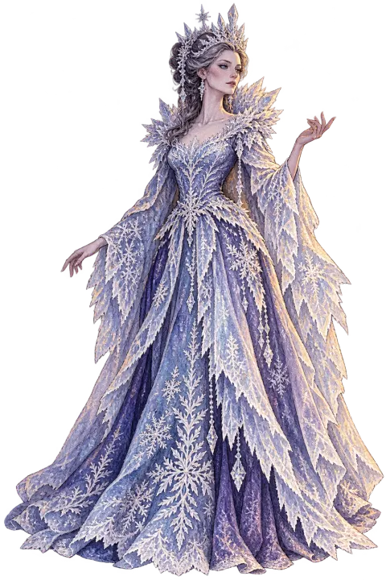
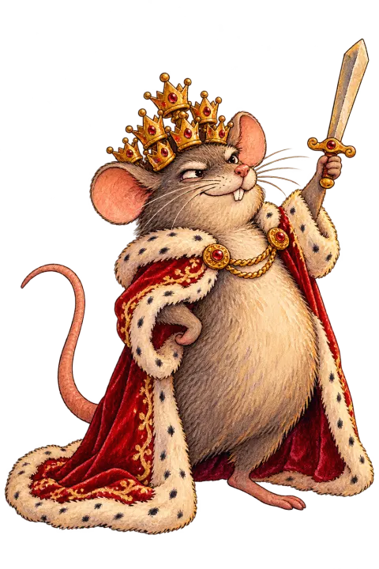
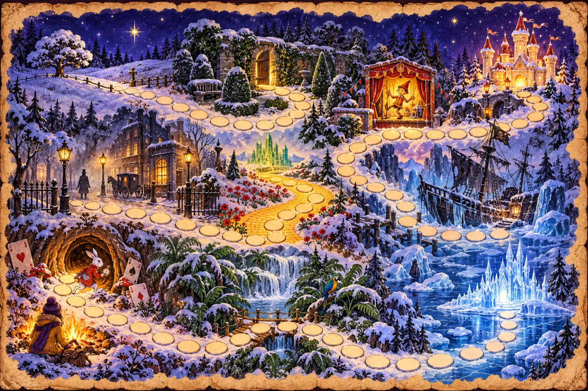
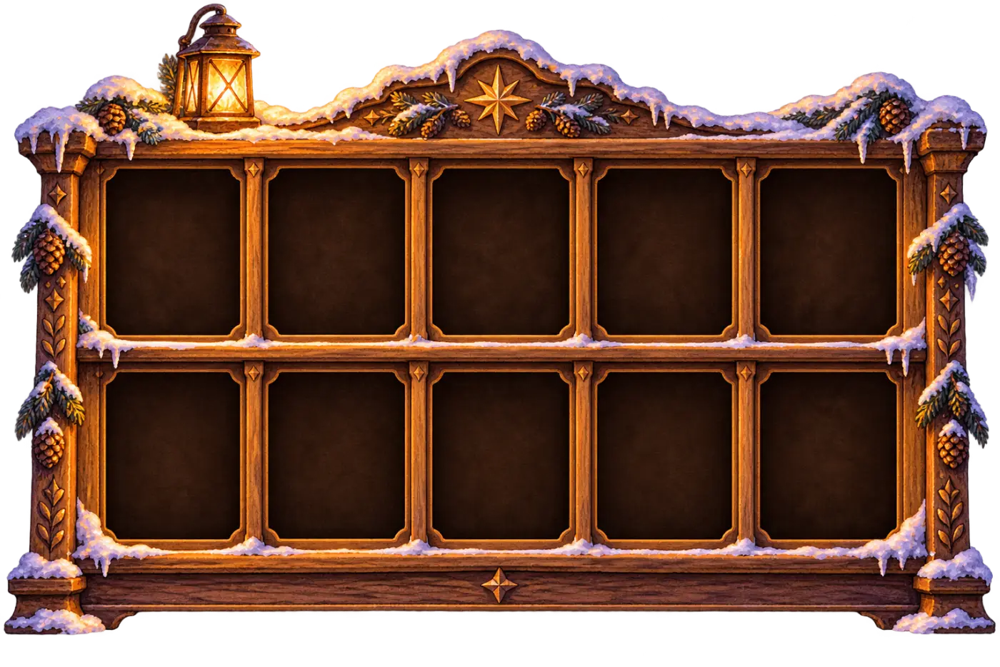

Двенадцать дней дома
Каникулы: телефон, гости и сладкое. Английский за это время тихо выветривается: в январе учителя каждый год видят откат. Слова забылись, грамматика поплыла. А заставлять заниматься в праздники не хочется. Ни вам, ни ребёнку.
Поэтому мы не заставляем. Мы зовём играть, а английский прячем внутрь игры.
Как проходит одна история

Костёр гаснет
Ребёнок бросает кубик и идёт по полю через зимний лес. Клетка может оказаться гостем, ловушкой или бонусом.

Приходит гость
Алиса, Маугли, Шерлок Холмс… Он рассказывает свою историю на английском, с озвучкой и картинками, под уровень ребёнка.

Беда в лесу
Мыши Мышиного короля выгрызли буквы из слов, замели дорогу, украли тень Питера Пэна. Три-четыре загадки на английском, и всё на месте.

Фраза героя
Настоящая цитата из книги, например Curiouser and curiouser! Ребёнок говорит её вслух, костёр горит до утра, а карточка героя встаёт на полку.
Лагерь растёт с каждой историей
В первый день пустая поляна и угли. К финалу палатка, фонари, снеговик и книжная полка с десятью героями. Ребёнок видит, сколько уже сделал.
Одна история в день. Прошёл, и дальше закрыто до завтра. Никакой бесконечной ленты.
Нажмите на номер истории, чтобы увидеть лагерь
Десять гостей у костра
Все герои из книг, которые стоит прочитать. Каждый оставляет «фразу героя» (настоящую цитату) и значок своей черты характера.

Снежная королевасобирает забытые истории
Мышиный корольи его мыши грызут буквыОдно поле — три уровня
Братья и сёстры играют в одну историю, каждый на своём уровне. Задания построены на том, что ребёнок прошёл с сентября, плюс немного нового с подсказками, чтобы было куда расти.

Что внутри каждой истории
Каждая история — полноценный урок английского на материале книги героя. Шесть навыков, и каждый спрятан в игру: у героя замёрзли шесть страниц книги, и каждое задание оттаивает одну.
- Listeningслушает, как герой и волшебная Книга рассказывают историю, и отвечает, что услышал
- Readingчитает страницу книги: отрывок, адаптированный под уровень, и настоящие строки автора
- Vocabularyновые слова из истории: ловит их, находит на картинке, раскладывает по полкам
- Grammarмыши выгрызли слова из книги, надо вернуть: грамматика, пройденная с сентября
- Writingпишет сам: ярлык, записку герою, свою загадку для друга
- Speakingговорит вслух «фразу героя» и отвечает на вопросы, костёр разгорается от голоса
Слушает и находит. Читать не нужно: картинки, озвучка, «повтори за героем», «покажи и принеси». Взрослый рядом: «ход для взрослого» почти в каждой истории.
10–12 минутКороткие тексты с озвучкой, шифры, стишки-подсказки, «собери фразу». Играет сам.
15–20 минутОтрывки из настоящих книг в нашей адаптации, грамматика прямо из текста, детективные улики, короткое письмо герою.
20–25 минутРасписание
Новая история открывается утром, играйте, когда удобно: днём или вечером. Пропустили день? История не сгорает. Её можно пройти в любой день до 9 января.
Все каникулы
Это 350 ₽ за историю, как один поход в магазин. А на выходе каникулы с английским и книгами вместо роликов.
Продажи откроются 1 декабря. Кнопка добавит напоминание в календарь телефона. Оплата будет картой, чек придёт на почту, код доступа сразу после оплаты.

Дошёл до конца — получи книгу
Кто пройдёт все десять историй, выбирает героя, чью историю хочет дочитать, и получает в подарок настоящую книгу. Малышам и детям 8–10 лет на русском, чтобы читать вместе с родителями, а 11–14 лет адаптацию на английском под свой уровень.
А родителю достаётся список для чтения: какое издание взять на русском и какую адаптацию на английском именно вашему ребёнку.
Пролог — бесплатно и уже сейчас
Десять минут вместе с ребёнком: мультфильм о том, что случилось с книгами, потом книга оживает, вы бросаете кубик, подкидываете дрова в костёр и видите силуэты всех десяти гостей. Понравится, тогда и решите про остальное.
Напоминание добавится в календарь телефона: накануне первой истории.
Вопросы родителей
Мне нужно знать английский, чтобы помогать?
Нет. Подсказки для взрослого на русском, вся озвучка на английском уже внутри игры. «Ход для взрослого» рассчитан на любого родителя.
На чём играть?
Телефон, планшет или компьютер, прямо в браузере. Ничего устанавливать не нужно. Для «фразы героя» нужен микрофон — на телефоне он есть всегда.
Сколько времени в день?
10–12 минут у малышей, 15–20 у 8–10 лет, 20–25 у старших. Одна история в день — больше игра не даст.
Мы уезжаем на праздники. Истории пропадут?
Нет. Пропущенная история не сгорает: её можно пройти позже, 8–9 января специально оставлены, чтобы догнать.
Ребёнок не учится в Speak & Smile. Ему подойдёт?
Да. Задания опираются на то, что дети этого возраста проходят в первом полугодии, а уровень вы выбираете сами при старте.
Что будет 10 января?
Общий финал онлайн: все дети вместе сражаются с Мышиным королём. Каждый, кто дошёл, получает именной сертификат. Ученики школы — ещё и праздник в классе с призом.